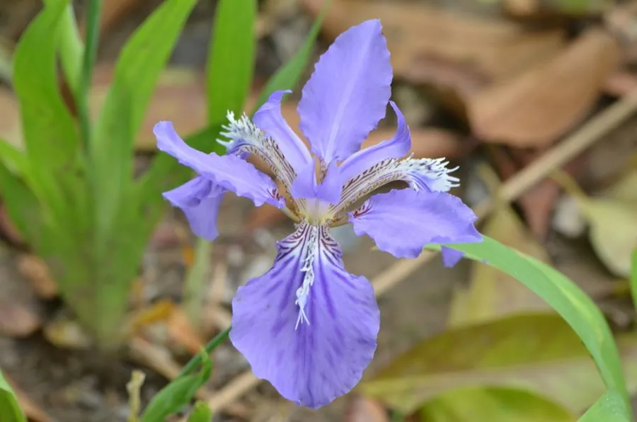

花卉与草本 · 植物界
鸢尾 Iris tectorum

鸢尾科多年生草本，蓝紫色花朵形似翩飞的蝴蝶，常栽于庭院水边与花境，根茎可入药，也是水景园中的常见植物。
- 分类
- 门被子植物门纲木兰纲目天门冬目科鸢尾科属鸢尾属
- 栖息环境
- 林缘、溪边湿润草地及石隙，喜光也耐半阴
- 地理分布
- 原产中国中部及日本，中国长江流域及西南山地常见
- 保护级别
- 暂无评估
物种志
鸢尾为鸢尾科鸢尾属多年生草本，株高 30–60 厘米，根状茎匍匐多节，粗壮。叶片剑形，长 15–50 厘米，宽 1.5–3 厘米，基部互相套叠，呈扇状排列。花葶自叶丛中抽出，花蓝紫色，直径约 10 厘米，外花被片中央有鸡冠状白色或紫色突起，花期 4–6 月，果期 6–8 月。
鸢尾原产中国中部及日本，常生于林缘、溪边和湿润草地，喜阳光充足或半阴环境，耐寒、耐湿。它因花形如鸢鸟尾羽而得名，每朵花只开一天左右，但整株花期可持续数周。鸢尾根状茎含鸢尾苷等成分，可入药，但生品有毒，不可自行服用；园林中常片植于水岸、林下，梵高的名画《鸢尾花》更使它广为人知。
形态与习性
- 株高30–60 厘米
- 花期4–6 月，单朵花仅开 1–2 天
- 果期6–8 月，蒴果六棱状
- 光照喜光，也耐半阴
- 水分耐湿，可种于水岸浅水处
- 土壤疏松湿润、排水良好的壤土
- 主要用途园林地被、水景绿化，根茎入药
趣味知识
- 鸢尾花形如鸢鸟的尾羽，外花被片中央的鸡冠状突起是识别要点。
- 单朵鸢尾花寿命很短，通常清晨开放、傍晚凋谢，但花序会陆续开放。
- 梵高 1889 年创作的《鸢尾花》以蓝紫色花朵为主题，是后印象派名作。
- 鸢尾根茎生用有毒性，须经炮制才能入药，不可自行采食。